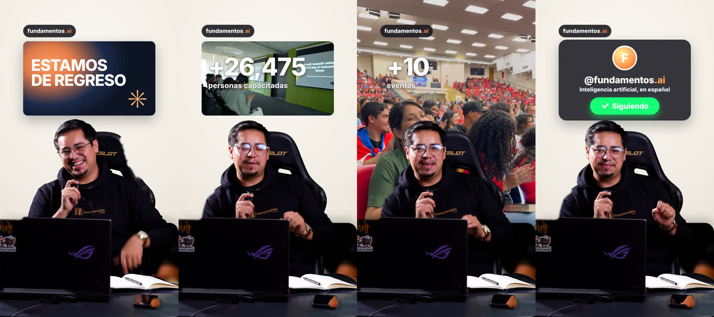
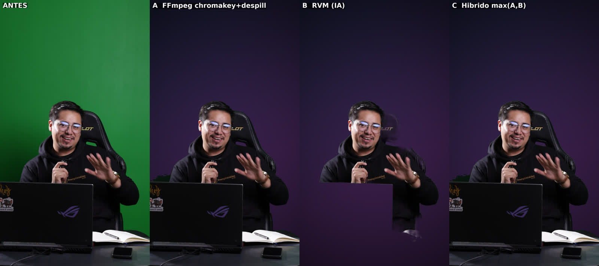
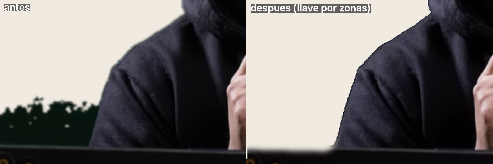
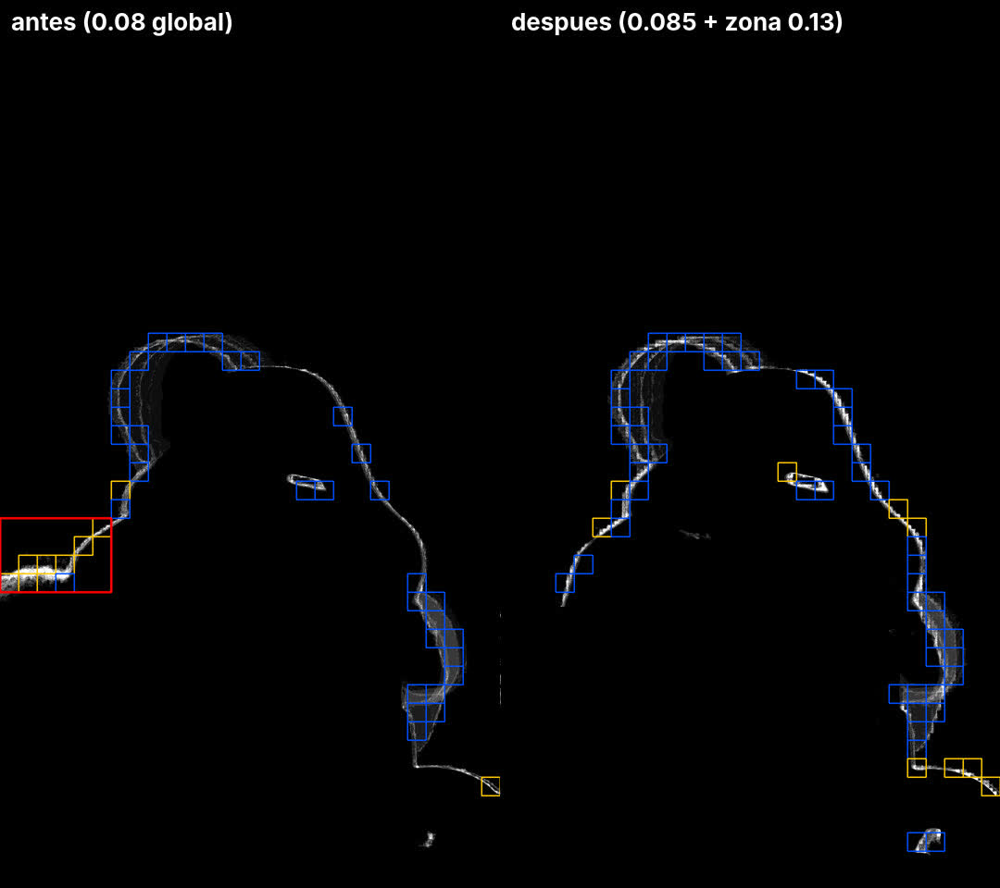
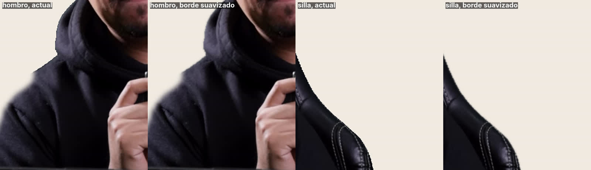
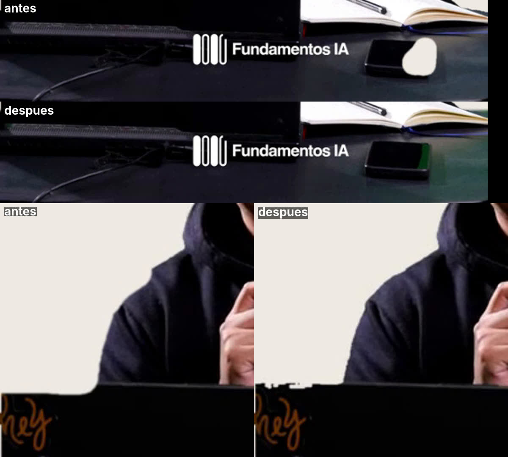
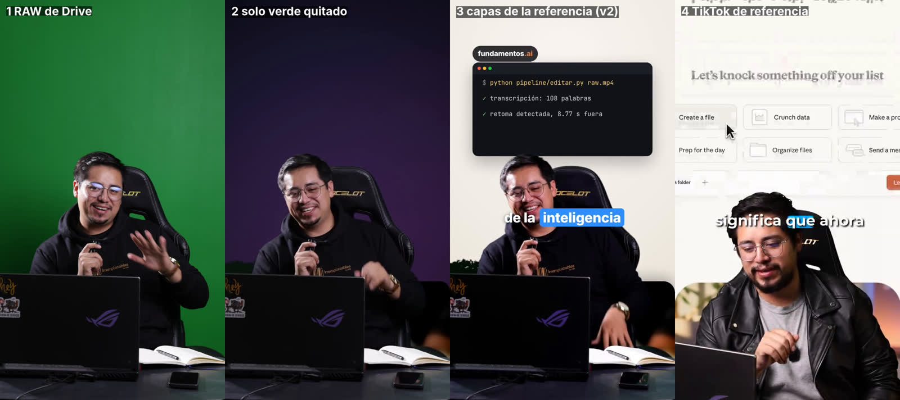
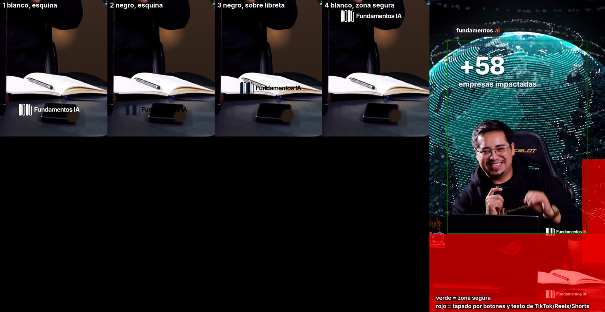
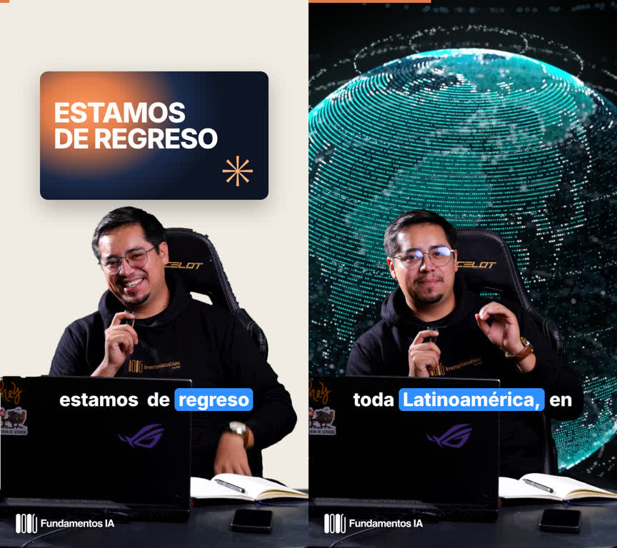

Lo que hoy produce un short desde un raw de celular en pantalla verde, reconstruido con lo que aprendimos editando IMG_7889 (el primer video real). Un comando, seis etapas, ocho capas, y un auditor que mide en vez de confiar.
Regla de espacio. La franja superior (250–740 px de 1920) es de b-roll, título y contadores; la persona ocupa de 740 hacia abajo; las captions van sobre la tapa de la laptop (1360 px); el logo pegado a la esquina. Nada pisa la cara.
Regla de tiempo. Todo se expresa en tiempo del cuerpo (el video ya cortado), nunca del raw. Las palabras se remapean restando lo quitado antes de cada una; esos tiempos sirven para captions, no para cortar.
Regla de audio. La voz es una pista aparte (cuerpo_limpio.wav), separada del video de la persona, para que la limpieza de audio y la capa visual no se pisen. Los SFX van bajos: la voz manda.
Regla del fundido. El cuerpo para la capa visual se corta sin fundido a negro; el fundido de 0.1 s por empalme lo pinta la composición bajando la opacidad de la persona. Un negro dentro del video keyeado sería un rectángulo negro sobre el fondo.

AssemblyAI universal-3-5-pro, español, con muletillas. Salida: raw.palabras.json (palabra, inicio, fin).
Pausas > 450 ms a 250 ms; retoma inicial fuera; el corte siempre en el centro de la pausa medida por energía, nunca en el timestamp de una palabra. Salida: raw.edl.json.
Rotación del celular, encuadre 9:16 centrado, bordes al frame, --fade 0. Salidas: cuerpo_576.mp4, cuerpo_1080.mp4, cuerpo.aplicado.json.
DeepFilterNet3 separa viento y fondo sin tocar la voz; luego paso-alto 100 Hz, filtro de graves dinámico y respiraciones a −18 dB, nunca sobre frames con voz. En IMG_7889: 213 ráfagas de viento, 7 respiraciones.
Llave sobre cuerpo_1080 con máscaras de sombra y escritorio → persona con alfa; palabras remapeadas → captions; assets al proyecto Hyperframes; render preview 576; auditor de llave.
El auditor mide solo en los empalmes del EDL y en el alfa (parpadeo, agujeros) y escribe pendientes.md. Con cero pendientes y tu visto bueno: render 1080.
python pipeline/editar.py raw.mp4 --rotar ccw --hasta visual # preview 576 + pendientes python pipeline/editar.py raw.mp4 --rotar ccw --hasta final # además final_1080.mp4 raw/ raw.palabras.json raw.edl.json cuerpo_576.mp4 cuerpo_1080.mp4 cuerpo.aplicado.json cuerpo_voz.wav cuerpo_limpio.wav cuerpo.palabras.json mascara_sombras.png mascara_escritorio.png persona_1080_alfa.webm persona_576_alfa.webm preview_576.mp4 pendientes_llave.md final_1080.mp4

El matting por IA (RVM) deja el pelo perfecto pero borra laptop, silla y libreta: solo entiende "persona". El chromakey conserva el escritorio. Umbral útil: 0.085 (a 0.12 desaparece la sudadera, porque el verde es oscuro y en crominancia está cerca del negro).

Junto a la laptop el verde está en sombra, a 0.084–0.10 del clave, justo sobre el umbral: cada píxel entraba y salía. Como la cámara no se mueve, una máscara de "verde en sombra" usa tolerancia 0.11 solo ahí. Parpadeo de 10 % por frame a 0.3 %.

Mide la tasa de conmutación por píxel, descarta bordes en movimiento con el raw, y en cada zona de verde estático calcula el umbral necesario y el techo (el negro de la ropa, 0.141). Recomienda global o por zona. Escribe pendientes.md.

Erosionar el alfa 1 px y plumarlo 1.1 px quita el filo de píxeles mezclados y la escalera. La máscara de sombras con pluma de 1 px en vez de 4 evita el borrón en la manga.

La pantalla del celular refleja verde y abría un hueco crema. Bajo la mesa (y = 1715) no hay pared, así que ahí la llave no decide: se toma el fotograma original con despill. Fija por set.

El raw 4K ya supera al TikTok de referencia (576p). Lo que lo iguala: b-roll cada ~2 s, captions cada ~0.6 s, fondos claros (luma 69 %), un grado ligero en la cara (saturación 35 → 49 %) y la tarjeta detrás de la persona.

Medido: la mesa tiene luminancia 40/255, el negro desaparece; el blanco se lee. Los últimos ~480 px de altura y ~130 px de la derecha los cubren los botones de TikTok, Reels y Shorts. Se eligió la esquina inferior izquierda a 48 px, asumiendo ese riesgo.

94 palabras en 33 bloques; cada palabra se enciende cuando AssemblyAI la oye empezar (±170 ms). Mismo contorno negro que los contadores. Posición elegida: justo encima del logo de la laptop, sin pisar la cara ni el b-roll.
| Qué pasó | Causa | Regla que quedó |
|---|---|---|
| El render salió oscuro y sin b-roll, pero las capturas estaban bien | Un clip de celular en HLG BT.2020 hizo que Hyperframes convirtiera todo a HDR; ese filtro no conserva alfa y la persona quedó opaca | Todo b-roll entra en SDR bt709; ffprobe de color_transfer antes de usarlo |
| Una tos quedó dentro del corte | AssemblyAI la etiquetó como la palabra "Y" | Una "palabra" de 1–2 letras aislada, 15 dB bajo la frase siguiente, es ruido; el corte se mueve al valle de energía (8.77 → 9.30 s) |
| El frame 0 salía vacío | Persona y título entraban desde opacidad 0, y se veía la tarjeta desenfocada | Nada entra desde opacidad 0: el frame 0 es la miniatura |
| Render de 21 minutos | El Chromium del contenedor no tiene beginFrame y Hyperframes cae a captura de pantalla | Chrome propio de Hyperframes (221 s) y preview declarado a 576 (≈80 s); 1080 solo al final |
| Manchas crema y un bloque marrón en el fondo | Grano con mezcla overlay, viñeta y tarjeta bokeh sobre un crema plano | Texturas apagadas por variable; se activan solo si se piden |
| Ocho whoosh | Uno por cambio de b-roll satura | Dos whoosh (primer b-roll y botón), pops al cerrar contadores, un click |
pendientes.md; final 1080 tras tu visto bueno.| Pendiente | Por qué importa |
|---|---|
| Spec definitiva de captions (fuente, tamaño, color de caja, palabras por bloque) | Hoy es provisional, medida de tu TikTok; cambiarla son cuatro números |
Skill /broll con fuentes reales ("receipts") | Plan de b-roll automático desde el transcript, con la fuente visible, como pidió la retro |
| Codificar el WebM con alfa en paralelo por tramos | Son 5 de los 8 minutos del pipeline |
| Detector de retomas automático | Hoy la retoma inicial se marca a mano en el EDL |
| Máquina con GPU | RVM, DeepFilterNet y el render dejan de ser el cuello de botella |
Fuente: repo edicion-mate, rama de integración, docs 02-capa-visual.md, ESTANDAR-PIPELINE-AUDIO.md, HANDOFF-auditor.md. Tiempos medidos en un contenedor de 4 núcleos sin GPU.